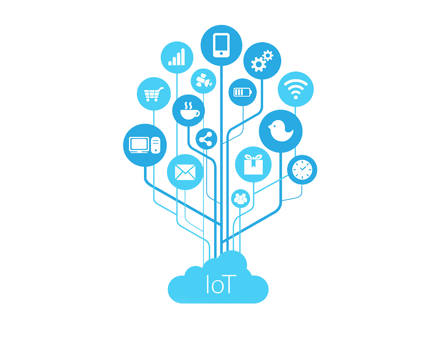

SOBRE A GUAYACAN AUTOMAÇÃO RESIDENCIAL
Nossa misão é: A GUAYACAN SISTEMAS é uma empresa que atua no ramo de tecnologia voltada para ambientes residenciais e corporativos. Oferece soluções que tornam a interação das pessoas com a sua casa ou escritório mais simples, prática e intuitiva, proporcionando maior conforto e segurança, sem deixar de lado economia e sustentabilidade.
Nosso Estabelecimento
Nosso estabelecimento está localizado no coração da cidade.
BENEFICIOS
- Valorização do imóvel e custo-benefício excelente
- Economia e sustentabilidade
- Praticidade e conforto
- Personalização
- Segurança
- Valorização do imóvel e custo-benefício excelente
- Economia e sustentabilidade
- Praticidade e conforto
- Personalização
- Segurança